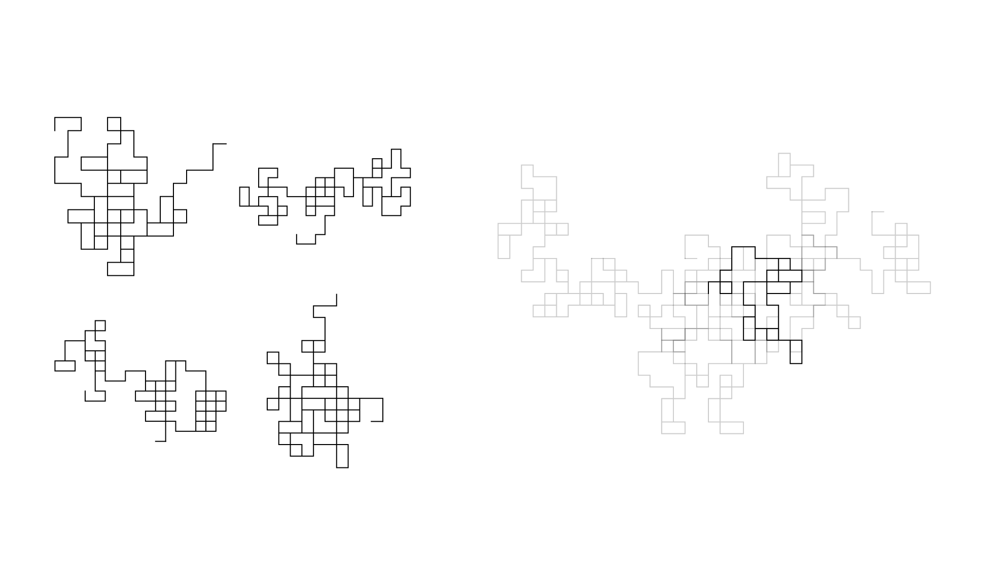

The Kolakoski sequence is a list of 1's and 2's. Each number can appear alone in a block of one,
or next to another copy of the same number in a block of two.
For example, a block of one 1 is "1" and a block of two 1's is "11".
The Kolakoski sequence is constructed so that the numbers in the sequence describe the lengths of the blocks in the sequence.
The Kolakoski sequence begins as follows:
These first seven numbers can be described as a block of one 1, followed by a block of two 2's, followed by a block of two 1's, followed by a block of one 2, followed by a block of one 1:
The lengths of each of those blocks, in order, are: one, two, two, one, one, or:
which you may recognize as the beginning of the Kolakoski sequence.
To take a "random Kolakoski walk," I walk 1 or 2 city blocks according to the Kolakoski sequence, then turn randomly and repeat. The images above show possible random Kolakoski walk routes on a grid.